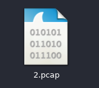
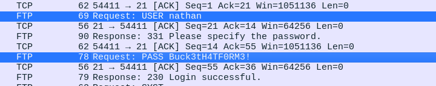
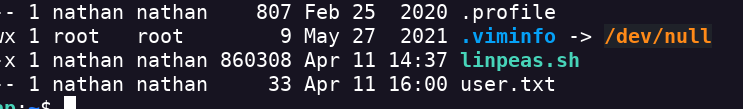
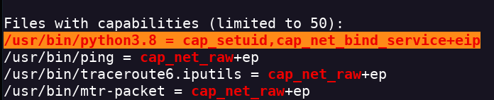

I begin by running a full port scan against the target machine in order to identify any exposed services.
nmap -Pn -sV -sC -p- --open 10.10.10.245 -oN scan.txtThe results show that the system is running HTTP, FTP, and SSH. To ensure proper name resolution, I add the target IP address to my local hosts file.
nano /etc/hostsWhen accessing the host through a web browser, I am presented with a dashboard interface. A Download button is available, so I intercept its request using Burp Suite to inspect how it works.
The response itself does not contain anything directly useful;
however, it downloads a .pcap file, which can be
analyzed further using Wireshark.

I open the downloaded PCAP file in Wireshark and analyze the captured network traffic. During this process, I discover cleartext credentials belonging to a valid user.

Using the recovered credentials, I log in via SSH as the user
nathan and successfully retrieve the
user.txt flag.
To search for potential privilege escalation paths, I upload and execute LinPEAS on the target system, saving the output for later analysis.
./linpeas.sh > linpeas.txt
After reviewing the LinPEAS results, I identify a misconfigured bind binary that can be abused to escalate privileges.
I search for this binary on GTFOBins and find a suitable command that allows me to escalate privileges to the root user.
python3.8 -c 'import os; os.setuid(0); os.system("/bin/bash")'
Executing this command spawns a root shell, granting full system
access and allowing me to retrieve the root.txt flag.
